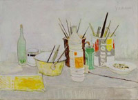
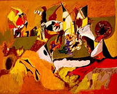
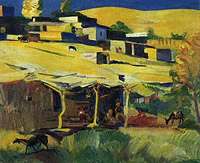

M
A
S
H
T
O
T
S
A
V
E
N
U
E
F
E
S
T
I
V
A
L
|
This
exercise said: "The Mashtots Avenue
Festival's Art Exhibit booth will feature young local painters
alongside the works of some Armenian Artists of international
renoun. To organize the exhibit, we need you to go through the
galleries and museums of the world in search of a few good
paintings by famous Armenians. "
Task:
Tell us what you found out about these famous Armenian artists
at the Embassy gallery:
- Jansem (Jan-Hovanes Semerdjian)
- Arshile Gorky
- Martiros Saryan
Solution:
The following is what can be found at the Armenian Embassies web
page.
Task:
Find the URL, the email address and the street address of the
Flora Jansem Gallery. Choose your favorite painting for the Art
Exhibit, give us its name and size, and send us a copy of it as
an email attachment.
Solution:
The URL of the Flora Jansem Gallery is
http://206.184.159.175/artforum/florajansem/ and its email
adress is flora@cofrase.com . The gallery is located on
18, Avenue Matignon 75008 Paris. You could have chosen
any painting as your favorite, here is one possible favorite. -

"Nature morte aux pinceaux" - 1992.
33 x 46 cm
Task:
Now off to Japan. We hear there is a museum there dedicated to
the work of Jansem! Find the name and the URL of that museum.
What are its opening hours?
Solution:
The URL of the Japanese Jansem site is http://www.infocr.co.jp/hometown/hotaka/
museum-e.html The musems hours are -
Everyday 9:00 a.m. - 5:00 p.m.
(10:00 a.m. - 4:00 p.m. from mid-November - mid-March)
Task:
Find Arshile Gorky's painting in the permanent collection of two
institutions:
- The Museum of Contemporary Art of Los Angeles (MOCA)
- The Washington University Gallery of Art
We need copies, titles and dimensions.
Solution:
A Gorky painting from MOCA is Betrothal I ( 51 x 40 1/16
inches).

One
of the Gorky paintings from The Washington University Gallery of
Art is Golden Brown (43 5/8 x 55 5/8").

Task:
Many of Martiros Saryan's paintings have a permanent home in
Yerevan, but it seems some can be found further to the north.
Find paintings by the Artist in the following museums -
- The Martiros Saryan Museum in Yerevan
- The Kazakstan State Museum of Arts
We need copies of some of the paintings, their titles and
dates if available.
Solution:
One of the possible finds from Yerevan is Mount Aragats,
(110x106cm), 1925.

Further
north, we have something like The Settlement, 1932.

|
|